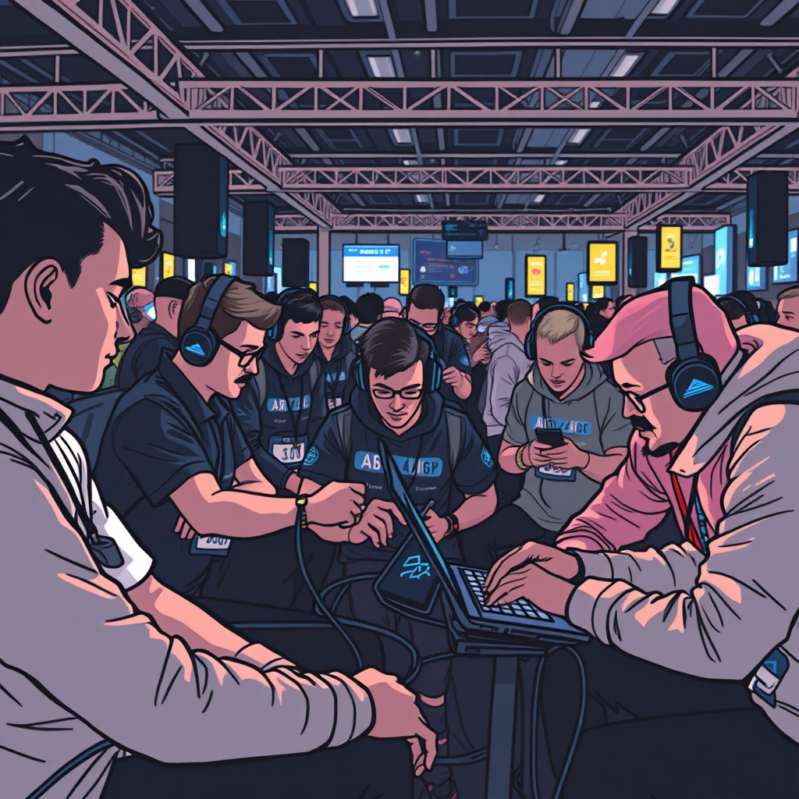

Maratona SBC de 2019
A Maratona de Programação da SBC (Sociedade Brasileira de Computação) de 2019 foi um evento de grande relevância para a comunidade de desenvolvedores e estudantes de computação no Brasil. Com uma tradição consolidada, a maratona se realizou em várias etapas, começando por fases regionais que reuniram equipes de diversas universidades. O principal objetivo foi promover a resolução de problemas algorítmicos, estimulando a criatividade e o raciocínio lógico dos participantes. Além de desafiar os estudantes a enfrentar problemas complexos sob pressão, a maratona fomentou a colaboração e o trabalho em equipe, habilidades essenciais no mercado de trabalho. Os participantes tiveram a oportunidade de interagir, trocar experiências e aprender com colegas de outras instituições, fortalecendo a comunidade acadêmica. Em resumo, a Maratona de Programação da SBC de 2019 não foi apenas uma competição, mas um evento educacional e inspirador, que contribuiu significativamente para a formação dos futuros profissionais de tecnologia no Brasil.
Estrutura do Evento
A Maratona de Programação é composta por várias fases. Inicialmente, as equipes se inscrevem e participam de uma fase regional, que, em 2019, envolveu diversas universidades em todo o Brasil. As melhores equipes dessas fases regionais avançam para a final nacional, onde competem por uma vaga na competição internacional, a ICPC (International Collegiate Programming Contest).
Formato da Competição
As equipes, formadas por três estudantes e um treinador, têm um tempo limitado (geralmente 5 horas) para resolver um conjunto de problemas de programação. Os problemas variam em dificuldade e cobrem diversas áreas da computação, como algoritmos, estruturas de dados, matemática e lógica. As equipes usam um único computador para codificar suas soluções e devem submeter suas respostas para serem avaliadas por um sistema automatizado.
Desafios e Aprendizado
Os problemas apresentados na maratona são projetados para testar não apenas o conhecimento técnico, mas também a capacidade de trabalho em equipe e a habilidade de raciocínio sob pressão. As equipes precisam comunicar-se efetivamente para dividir tarefas, discutir abordagens e corrigir erros.
Impacto e Resultados
A Maratona de Programação da SBC em 2019 foi um sucesso em termos de participação, com centenas de equipes inscritas de universidades de todo o país. Os resultados não só destacaram o talento dos estudantes, mas também serviram como um ponto de encontro para a troca de experiências entre alunos e professores, além de fortalecer a comunidade acadêmica e técnica.